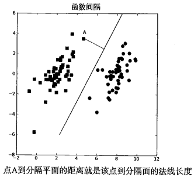
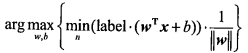
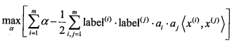

支持向量机
Table of Contents
什么是支持向量机?
假设要将一组数据集分成两类.
如果数据集是二维的, 能否找出一条直线将两组数据分开?
如果数据集是三维的, 能否找出一个平面将两组数据分开?
如果数据集是N维的, 能否找出一个超平面, 将两组数据分开?
如果能找到这样一个超平面, 我们就将其称为 分隔超平面. 我们希望能找到离分隔超平面最近的点, 使它们离分隔超平面尽可能的远. 如果将点到分隔面的距离称为 间隔, 我们希望的就是间隔尽可能的大.(原因是如果我们犯了错, 或者在有限数据上训练分类器的话, 我们希望分类器能够尽可能地健壮一些).
支持向量 就是离分隔超平面最近的那些 点. 我们要做的, 就是 最大化支持向量到分隔面的距离.
支持向量机的优缺点: 优点: 泛化错误率低, 计算开销小, 结果易解释. 缺点: 对参数调节和核函数的选择敏感, 原始分类器不加修改仅适用于处理二类问题.
寻找最大间隔
分隔超平面在数学上, 可以写成: \(\pmb w^{T}\pmb x + b\). 其中, \(x\) 相当于一系列的特征, \(w\) 是其系数.
点 \(A\) 到分隔超平面的法线长度为: \(\frac{|\pmb w^{T}\pmb x + b|}{||\pmb w||}\). 如图所示:

分类器求解的优化问题
既然是分类器, 就需要在得到一系列特征之后, 对数据进行分类.
支持向量机中, 我们使用的函数与Sigmoid函数类似. 不同之处在于, 如果输入小于0, 则输出-1, 反之则输出+1.
我们需要将一系列的特征和系数( \(\pmb w^{T}\pmb x + b\) )作为输入传递给该函数, 根据输出来分类.
使用+1或-1, 而不使用0或1, 是为了方便数学上的处理.
间隔使用 \(label * (\pmb w^{T}\pmb x + b)\) 来表示. 其中, \(label\) 为+1或-1.
如果数据点处于正方向(即+1类)并且离分隔超平面很远时, \(\pmb w^{T}\pmb x + b\) 是一个很大的正数, 乘以 \(label\) 后仍然是个很大的正数.
如果数据点处于负方向(即-1类)并且离分隔超平面很远时, \(\pmb w^{T}\pmb x + b\) 是一个很大的负数, 乘以 \(label\) 后是个很大的正数.
不管怎样, 都是很大的正数, 方便处理.
特征需要自己去提取, 所以现在的目标是要找出系数 \(\pmb w\) 和 \(b\) . 为了找出它们, 还要先找到具有最小间隔的数据点, 即要先找到支持向量.
最大化的间隔可以写成:

直接求解该问题非常困难. 如果假设 \(label \cdot (\pmb w^{T}\pmb x + b) \geq 1.0\), 使用拉格朗日乘子法, 可以将优化目标函数转化成如下形式:

约束条件为: \(\alpha \geq 0\), \(\sum_{i=1}^{m} \alpha_i \cdot label^{(i)} = 0\).